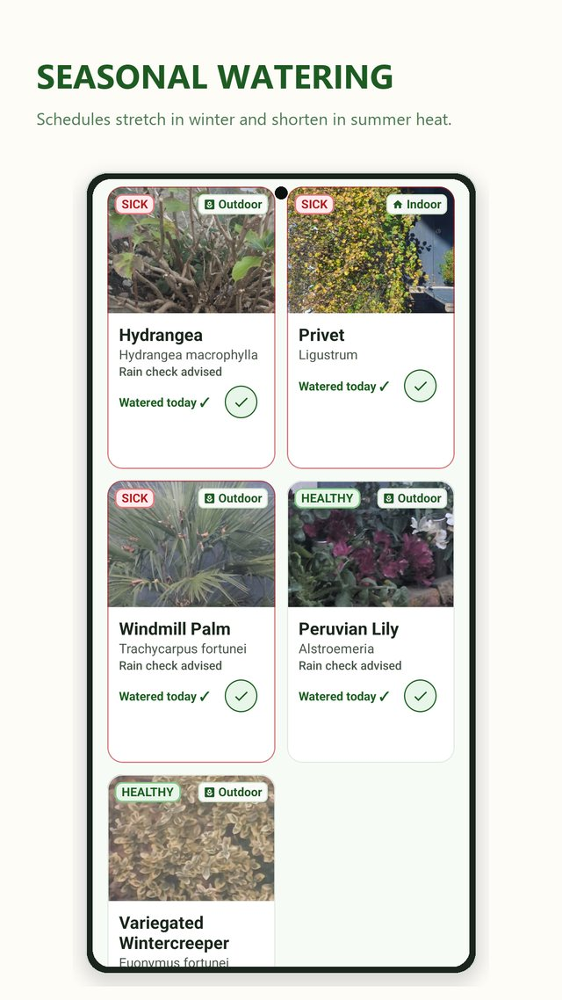
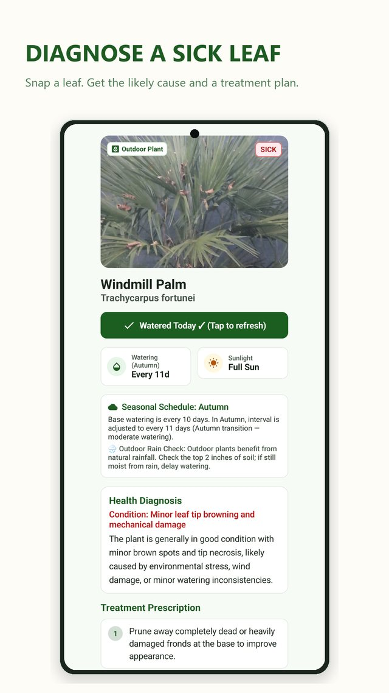
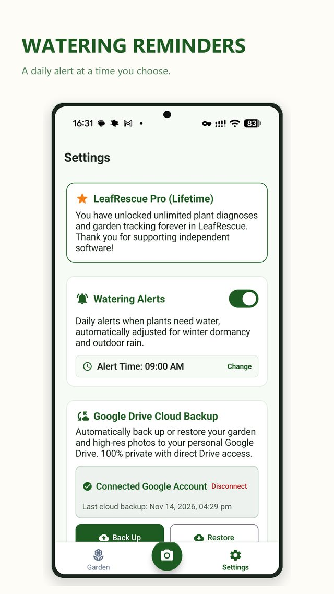
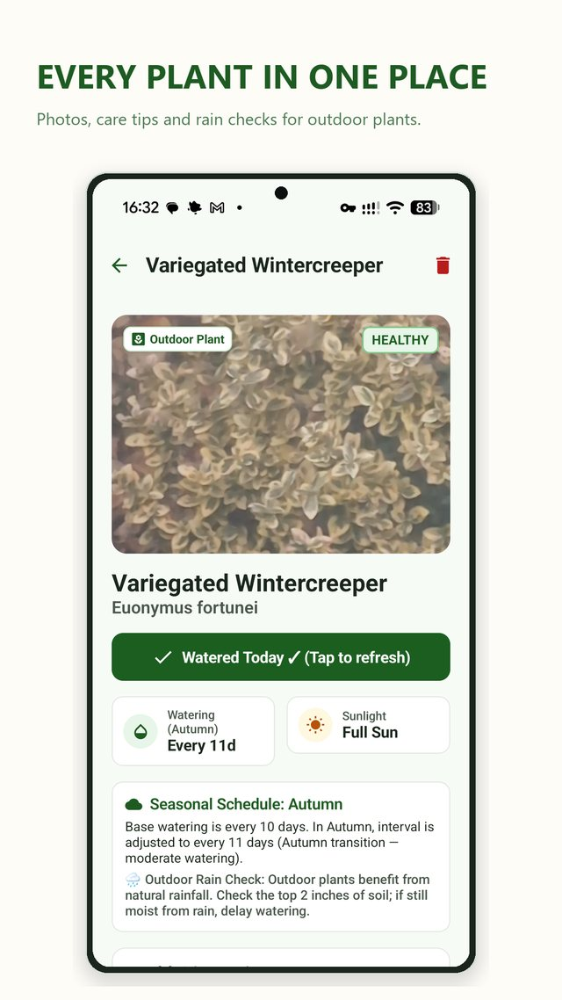
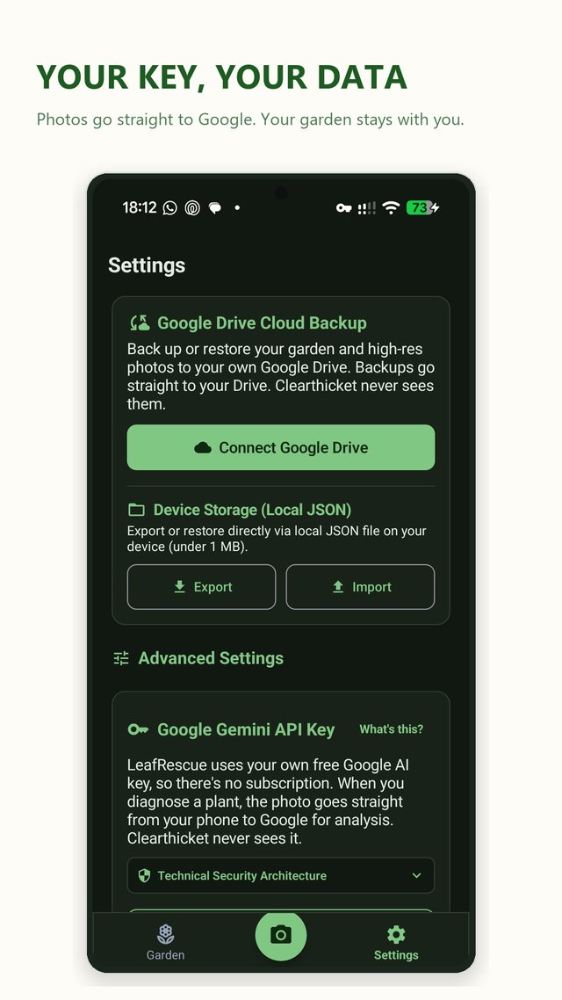

Photograph a sick leaf. Find out what's wrong.
Brown tips, yellow patches, drooping stems: photograph the leaf and LeafRescue tells you the likely cause, how serious it is and what to do next, then reminds you when to water. It uses Google Gemini with your own free key.
On Google Play · Free to try · £4.99 once for unlimited scans

What it does
Diagnosis from a photo
Uses Google Gemini to look at leaf discolouration, fungal spots, pest damage and stress from light, water or temperature.
What to do next
Get clear step-by-step triage: should you isolate the plant, trim foliage, adjust drainage, or spray neem oil? Plain steps, no jargon.
Watering reminders
Once a day, LeafRescue checks your plants and sends a notification on the morning one needs watering.
Your own Gemini key
Add your own free Gemini key. It is encrypted on your phone with the Android Keystore. Photos go straight from your phone to Google; there is no Clear Thicket server in between.
Backup and restore
Export your entire plant collection and care logs to a single JSON file. Save directly to Google Drive or local storage and restore anytime.
£4.99 once
5 free scans to start. Pay £4.99 once for unlimited scans. No subscription.
How it works
Point, Snap & Understand
Take a photo of any sick or discoloured leaf with your camera or import one from your photo gallery. LeafRescue instantly breaks down the condition:
- Botanical Identification: Plant species & common name.
- Condition & Severity: Mild, Moderate, or Severe rating.
- Underlying Root Causes: Overwatering, low humidity, pests or fungi.

Keep Your Entire Jungle Thriving
Review your diagnosis and save the plant to "My Garden". The app tracks dynamic watering intervals and displays actionable status indicators:
- Dynamic Countdowns: "Water in 3 days", "Due today", "Overdue".
- One-Tap Watering: Log a watering with a single touch to reset schedule.
- Status Badges: Healthy, Under Treatment, Recovering, Quarantine.

Deep Plant Profiles & Care History
Review every past diagnosis and botanical prescription. Keep custom care notes, monitor sunlight preferences, and see how your companion recovers over time.
- Full Diagnostic History: Track disease resolution.
- Custom Care Notes: Soil type, fertilizer cycle, location.

Total Privacy, Alerts & Backup
Everything is under your control:
- Watering Alerts: Verify notifications with an instant test trigger.
- Garden Backup & Restore: Export to Google Drive or local files anytime.
- Direct support: Send a support email from inside the app.

Questions
Why do I need a Google Gemini API key?
LeafRescue sends your photo straight from your phone to Google Gemini, using your own key. That way there are no servers of mine to pay for, and no subscription to cover them. You can get a free key in 30 seconds from Google AI Studio.
Is my API key safe on my device?
Yes. LeafRescue encrypts your key using the hardware-backed Android Keystore system (AES-256-GCM). It is only ever sent to Google, with each request, and never to Clear Thicket or anyone else.
How do watering notifications work?
Once every 24 hours, LeafRescue checks your saved plants in the background and sends a notification if any plant is due or overdue for watering.
What happens if I change or lose my phone?
You can export a JSON backup of your garden to Google Drive or local storage at any time via Settings. On your new phone, simply install LeafRescue, tap "Restore Backup", and restore your Pro purchase via Google Play with a single tap.